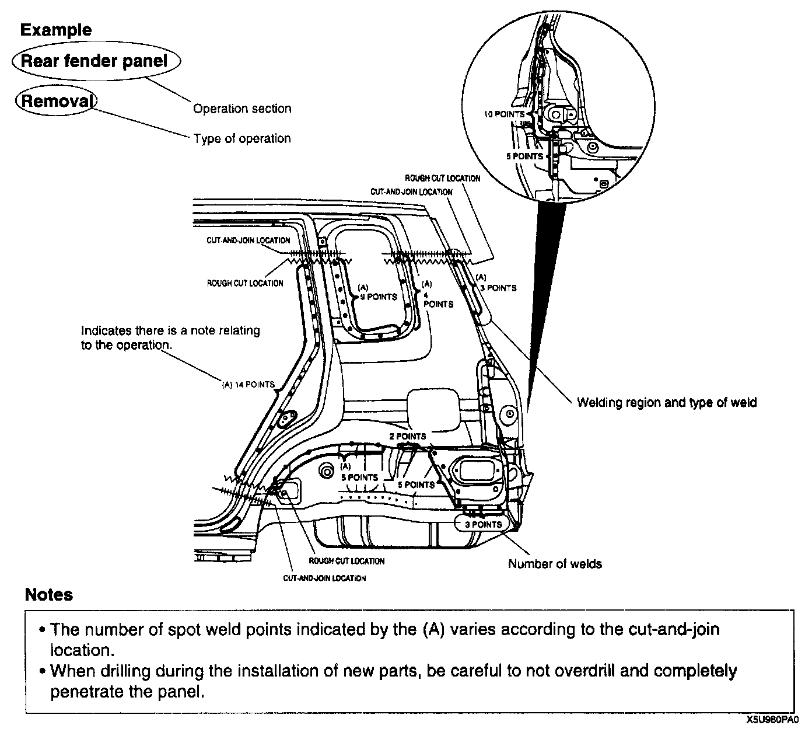
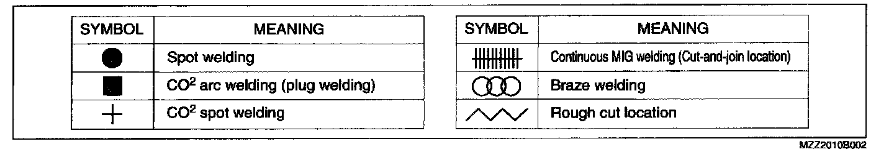

Efficient Replacement of Body Panels
Efficient Replacement of Body Panels
- This section contains information on the body panels in regard to the welding types, number of spot welds, and cut-and-join locations that are necessary for their removal and installation.
- The type of weld and position and indicated by symbols.
- Some sections have notes concerning the operation being performed. Thoroughly read and understand the notes before carrying out any procedures.
